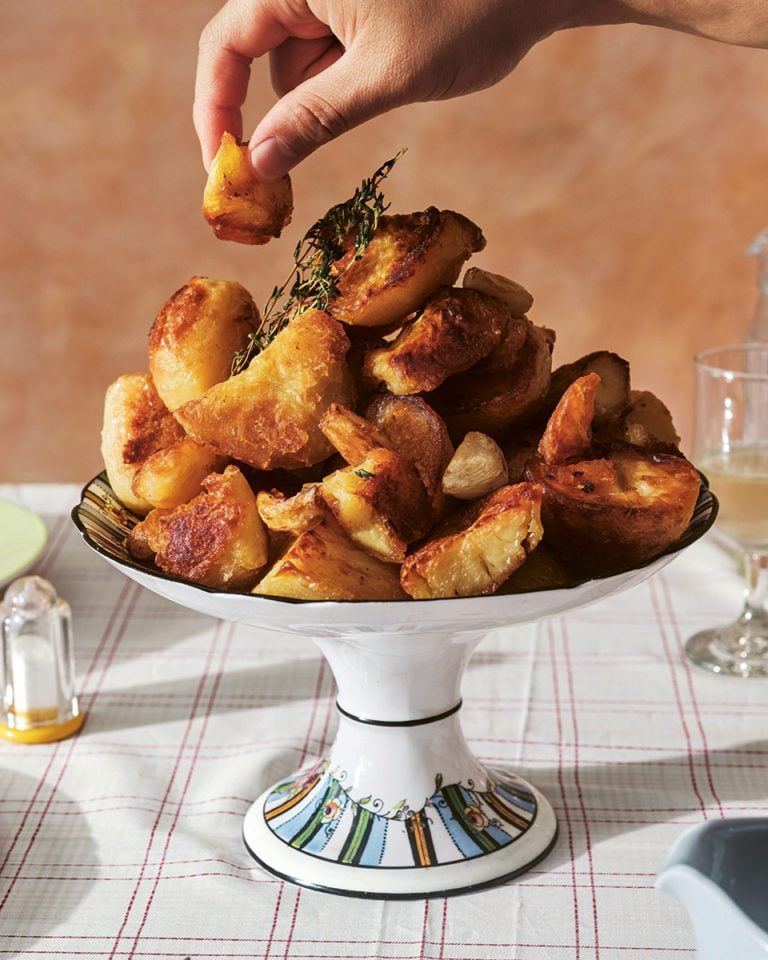

Roast Potatoes

This recipe is courtesy of Heston Blumenthal and Delicious Magazine. This recipe focuses on simple ingredients and techniques, and will result in shatteringly crispy roasted potatoes, with a moist, fluffy interior. It is the perfect side dish to go with Roasted Chicken, and is perfect for a sunday supper.
Ingredients
- 2 kg maris piper potatoes
- Vegetable oil or melted goose fat, duck fat or lard to roast
- 3 thyme sprigs
- 6 garlic cloves
Steps
- Peel the potatoes and cut them into even-size large chunks [1]. Immerse the potatoes in a bowl of cold water as you prepare them to prevent browning. Rinse the potatoes in a colander under cold running water until the water runs clear, to remove excess starch.
- Fill a large pan with lightly salted water and add the potatoes. Bring to the boil, then reduce the heat to a simmer and cook for 25 minutes until tender. Drain them very well in a colander, then spread out on a large wire rack set over a tray. Allow to cool.
- In the meantime, heat the oven to 180°C fan/gas 6. Select a large roasting tray, big enough to take all the potatoes and spread out in a single layer. Add enough oil (or melted fat) to the roasting tray to create a shallow layer, about 5mm deep. Lay the potatoes out carefully in the roasting tray, including all the smaller, broken-up pieces (they make delicious ultra-crispy bits), and roast in the oven for 20 minutes.
- Turn the potatoes a little and roast them for an additional 20 minutes or until firmed up and lightly golden on all sides. Turn the potatoes once more, especially the sides that look like they may need more time. Scatter over the thyme and use the back of a knife to smash the garlic cloves. Add these to the tray and return to the oven for another 20 minutes. The potatoes will be golden and crispy. Season with salt and serve immediately, to retain their crispiness.